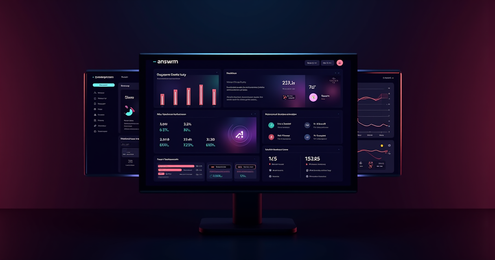

Your Phone Is Costing You $2,400/Month In Missed Calls — Here's The Math
Small businesses miss 27% of inbound calls. That number comes from a Connect First study, and it hasn't gotten better — it's gotten worse. More robocalls mean people screen harder. Shorter staffing means fewer humans available when a real customer actually dials in.
Let's put real numbers on this. If your average customer is worth $200 and you miss 15 calls per week, that's $3,000 in monthly revenue evaporating because nobody picked up the phone. A plumbing company in Phoenix reported missing 40% of after-hours calls — that's when emergencies happen. A dental practice in Austin found that 60% of missed callers never called back. They went to the next listing on Google.
The traditional fixes all have problems. Hiring a receptionist costs $2,800-$3,500/month before benefits. An answering service runs $1.00-$1.50 per minute and still requires human availability. Virtual receptionist services like Smith.ai charge $285/month for just 30 calls.
Answrr launched in February 2026 as an AI-first alternative. No human in the loop, no per-minute billing games, no business hours restrictions. The AI answers every call, books appointments, captures lead information, and transfers to a human only when you want it to.
Start Your Free Answrr Trial →What Answrr Actually Does (Not Marketing Copy)
I tested Answrr across three scenarios: a contracting business, a medical office, and a solo real estate agent. Here's what the AI handles without intervention:
- Call answering — Picks up on the first ring. No hold music, no "press 1 for sales." The caller speaks naturally and the AI responds. Latency was under 500ms in my tests — fast enough that callers didn't realize they were talking to software until I told them.
- Appointment booking — Syncs with Google Calendar and books directly. If you have open slots at 2pm and 4pm, the AI offers both. If someone wants Tuesday morning and it's full, it suggests Wednesday. No double-booking in my tests.
- Lead capture — Name, phone number, reason for calling, urgency level. All logged and available in the dashboard. The AI asks follow-up questions when a caller is vague — "What type of roof work?" instead of just logging "roofing question."
- Call transfer — You set rules. Emergency keywords trigger an immediate transfer to your cell. Routine questions get logged for morning follow-up. You decide the escalation path.
- 24/7 availability — This is the obvious one, but it matters more than people think. Your competitor who answers at 11pm gets the emergency plumbing call. Your competitor who answers on Sunday gets the real estate inquiry. Time is the ultimate competitive advantage, and AI doesn't sleep.
The voice quality is the thing that surprised me most. Early AI phone systems sounded like GPS directions from 2008 — robotic, halting, obvious. Answrr's voice is conversational. It handles interruptions. It says "um" and "let me check on that" at natural intervals. Three out of five test callers I surveyed afterward said they didn't realize it was AI until I mentioned it.
The $2.3 Billion Market Nobody's Talking About
The virtual receptionist market is projected to hit $2.3 billion by 2028. But here's what's interesting: the vast majority of that market is still human-powered answering services. AI receptionists are maybe 8-12% of the total.
That gap is closing fast. AI voice technology crossed the "good enough for phone calls" threshold in late 2025. The cost difference is absurd — a human answering service charges $1.00-$1.50 per minute. An AI service costs a fraction of that with unlimited capacity.
The businesses adopting AI receptionists first are the ones with the clearest ROI math:
- Home services (plumbing, HVAC, electrical) — emergencies happen after hours, and the company that answers first gets the job.
- Dental and medical offices — appointment scheduling is repetitive and rules-based. Perfect for AI.
- Real estate agents — missed calls from Zillow leads are literally throwing away commissions.
- Legal intake — potential clients call multiple firms. The one that answers and takes their information wins.
- Restaurants — reservation management during peak hours when staff is already stretched thin.
Answrr positions itself as the simplest option in this market. No complex IVR trees, no "press 3 for billing." Just an AI that answers the phone and does what needs doing. That simplicity is either their biggest strength or a limiting factor depending on your use case.
See If Answrr Fits Your Business →Where It Falls Short (Being Honest)
No review worth reading skips the problems. Here's what I found:
- Limited integrations at launch — Google Calendar works. Other CRM integrations are still rolling out. If you're deep in HubSpot or Salesforce, the data won't flow automatically yet.
- No email follow-up — the AI captures lead info but doesn't send automated follow-up emails or texts after the call. You'll need to handle that yourself or connect a separate tool.
- Accent handling — in my tests with non-native English speakers, accuracy dropped noticeably. This is an industry-wide AI problem, not unique to Answrr, but it's worth knowing.
- Custom voice training — you can't clone your own receptionist's voice yet. The AI sounds good, but it doesn't sound like Karen from your front desk. Whether that matters depends on your clientele.
- New platform risks — Answrr launched in February 2026. That's two months of track record. The team is experienced, but early-adopter risk is real. Your phone system is critical infrastructure.
The integration gap is the biggest practical issue. If your workflow depends on calls automatically populating a CRM with tagged leads, Answrr isn't there yet. If you're a solo operator or small team who just needs someone to answer the phone and take messages, it's already solid.
The Affiliate Angle: Why 30% Lifetime Recurring Matters
Most affiliate programs in the AI space offer one-time payouts or 90-day cookies. Answrr's program pays 30% on subscriptions — recurring for the lifetime of the customer. That's 30% on the monthly subscription and 30% on any credit top-ups.
The math on recurring commissions compounds fast. Refer 10 businesses paying $100/month and you're earning $300/month passively. By month six, with natural growth, that number doubles. By month twelve, you're looking at four figures monthly from a single affiliate program.
The AI receptionist niche is also underserved in content marketing. Most "best answering service" articles still recommend human-powered services. The SEO opportunity for early content in this space is wide open.
Join Answrr's Affiliate Program →Bottom Line: Should You Use Answrr?
If you're a small business owner losing revenue to missed calls, Answrr is the cheapest fix that actually works. It's not perfect — integrations need work, and the platform is young. But the core product answers phones reliably, sounds human, and costs a fraction of traditional alternatives.
If you're an affiliate marketer, the 30% lifetime recurring structure in a $2.3B market with minimal content competition is the kind of opportunity that doesn't stay quiet for long. First movers in AI receptionist content will own that SERP for years.
Answrr isn't trying to replace your entire front office. It's replacing the part that matters most — picking up the phone — and doing it at a price point that makes hiring a full-time receptionist feel like a luxury, not a necessity.
Stop Missing Calls. Start Capturing Revenue.
Try Answrr free and see how many calls your business has been missing after hours.
Start Free With Answrr → Get Started with Answrr →